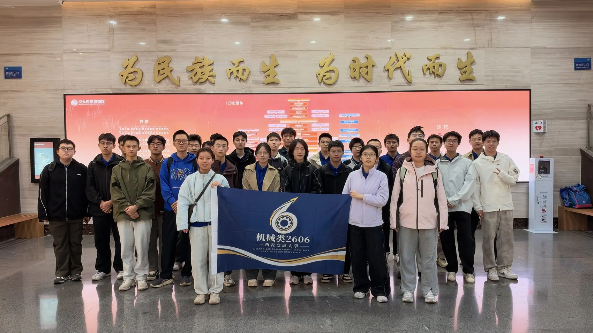
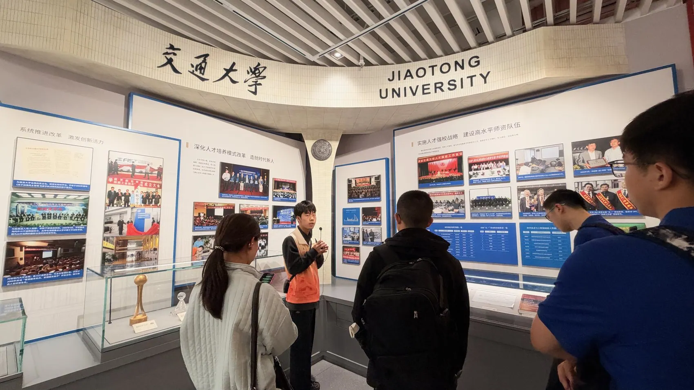
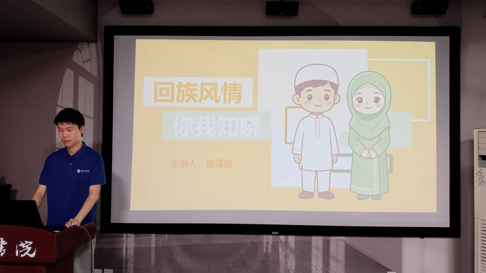

校园里的2606一起出发，
一起出发，
一起留下照片。
班级合照、校园交流与一个个平常的活动现场。

2026年秋天，我们在西安交通大学相遇。
这里是2606的班级网站，记录我们的人、照片和一起走过的日子。
我们是西安交通大学文治书院机械类2606班。
2026年，我们来到交大。从课程学习到课外活动，从初次见面到一起完成很多事情，“2606”慢慢变成了一群具体的人和共同的回忆。
这个网站会一直记录班级生活：活动、影像、作品，还有值得留给未来的普通日子。
认识我们的班级文化 ↗教室、校园、展馆和实验室。我们在不同的场合见面、讨论、动手，也留下了一张张合照。
班级合照、校园交流与一个个平常的活动现场。


2026年，2606的故事从这里开始。
更多班级照片 ↗一起参加活动的现场，和那些日后再看也能认出来的瞬间。
部分班级活动与同学交流记录，更多内容可以在活动页面查看。
有些活动走出了班级，被书院、学校和联办支部记录下来。我们把这些原文留在这里。